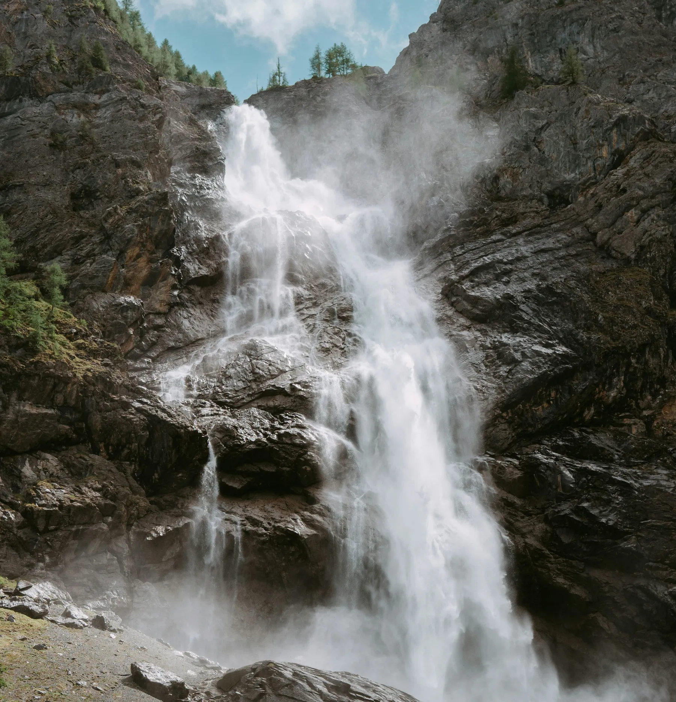
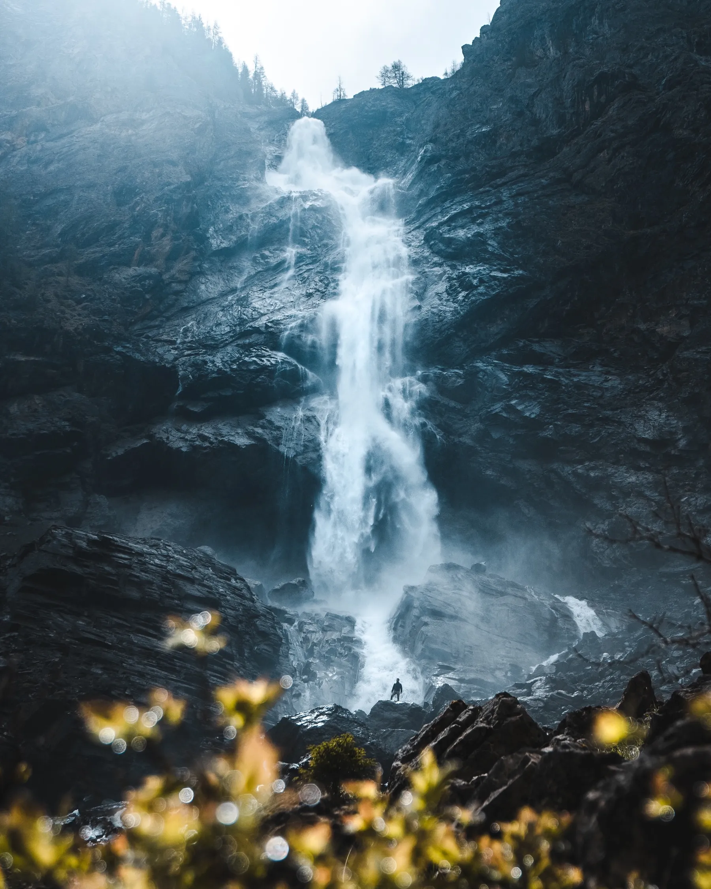

 1 / 4
Photo · Anthony Gomez
1 / 4
Photo · Anthony Gomez
WATERFALLS
Engstligen Falls
Two-tier falls off the Engstligenalp plateau above Adelboden. Overcast weather is actually the flex here.
RegionAdelboden, Central Switzerland
AccessCable car + short walk
EffortEasy
Best lightWhen cloudy